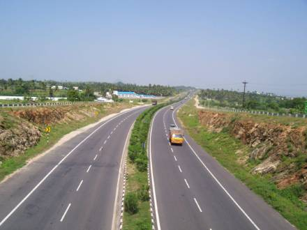
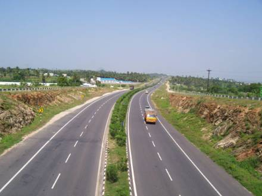

Overview
Syed Constructions undertakes a wide range of highway and road construction projects including BT (Bituminous Tar), Cement Concrete Roads, and Interlocking Paver Block Roads. We execute contracts for government departments, public infrastructure bodies, and private developers with a commitment to quality, safety, and long-term durability.
Highway Construction Workflow
1. Survey and Road Design
We begin with contour surveys, digital elevation mapping, and soil investigation. Road design includes pavement thickness, grade, and curvature calculations based on IRC (Indian Roads Congress) standards.
2. Earthwork and Subgrade Preparation
We excavate, fill, and compact the roadbed using heavy machinery. Subgrade is prepared with granular layers, ensuring uniformity and proper moisture control for maximum load-bearing.
3. WBM/WMM Base Layer
Water Bound Macadam (WBM) or Wet Mix Macadam (WMM) is laid, rolled, and compacted to act as a strong base before applying bituminous or concrete layers.
4. Bituminous Road (BT)
We apply bituminous layers such as Prime Coat, Tack Coat, DBM (Dense Bituminous Macadam), and BC (Bituminous Concrete). Proper temperature, rolling, and thickness control are maintained for smooth, durable surfaces.
5. Cement Concrete Road
In areas with heavy traffic or waterlogging, we build CC roads using M30–M40 grade concrete. Expansion joints and dowel bars are provided to avoid cracking. Surface is floated and broomed for texture.
6. Paver Block Roads
Used in colonies, footpaths, and intersections. We lay 60–80 mm thick concrete blocks over a sand bed with proper edge restraint. Blocks are compacted using vibratory plate compactors.
7. Side Drains, Markings & Finishing
We build covered and open drains, paint lane lines, install road studs and signage as per IRC guidelines. Final inspection ensures gradient, drainage, and smoothness parameters are met.
Machinery & Manpower
Our highway division uses pavers, JCBs, graders, tippers, rollers, bitumen distributors, concrete mixers, and curing tools. A dedicated team of engineers, supervisors, lab technicians, and road safety officers oversee operations.
Notable Projects
- BT Road – 5 km stretch – Pulivendula – R&B Dept. (2022)
- CC Road – 1.2 km – Dharmavaram Municipality (2021)
- Interlocking Block Pavement – Bus Stand Area – Penukonda (2020)
Gallery

 
